Nach diesem Kapitel kannst du …
- erklären, was es heißt, dass ein Modell aus Daten „lernt“: Es stellt Zahlen so ein, dass seine Fehler möglichst klein werden.
- begründen, warum man ein Modell immer an Daten prüft, die es beim Lernen nicht gesehen hat.
- beschreiben, was ein künstliches Neuron rechnet und wie aus vielen Neuronen ein Netz wird.
Kästen „Für Neugierige“ enthalten Rechnungen und Hintergründe. Für den Rest des Kapitels brauchst du sie nicht.
1. Der Eisverkäufer
Ein Eisverkäufer notiert an zehn Tagen die Temperatur und die Zahl der verkauften Kugeln (die Zahlen sind für dieses Beispiel erfunden):
| Temperatur (°C) | Verkaufte Kugeln |
|---|---|
| 13 | 146 |
| 15 | 226 |
| 16 | 177 |
| 19 | 257 |
| 20 | 228 |
| 22 | 245 |
| 23 | 293 |
| 26 | 272 |
| 27 | 344 |
| 29 | 312 |
Er möchte wissen: Wie viele Kugeln verkaufe ich morgen, wenn es 25 °C warm wird? Bereitet er zu wenig vor, verliert er Kundschaft. Bereitet er zu viel vor, muss er Eis wegwerfen.
Kurz überlegen: Wie viele Kugeln würdest du bei 25 °C vorbereiten? Und wie bist du auf deine Zahl gekommen?
Auflösung
Wahrscheinlich hast du zuerst den Trend erkannt: Je wärmer es ist, desto mehr Eis wird verkauft. Dann hast du nach Tagen um 25 °C gesucht (23 °C: 293 Kugeln, 26 °C: 272 Kugeln) und einen Wert dazwischen geschätzt, etwa 280 bis 300. Ein Modell geht ähnlich vor, nur mit einer festen Rechenregel: Es bekommt die Temperatur und rechnet daraus die Zahl der Kugeln aus.
Merke: Maschinelles Lernen heißt: Aus Beispielen mit bekannter Antwort wird eine Regel gewonnen, die auch für neue Fälle eine Antwort liefert.
2. Eine Gerade durch die Punkte
Zeichnet man die zehn Tage in ein Diagramm, liegen die Punkte ungefähr auf einer Linie. Die lineare Regression legt eine Gerade so durch die Punkte, dass sie insgesamt möglichst wenig danebenliegt. Für unsere Daten ist das diese Gerade:
Kugeln = 10 · Temperatur + 40
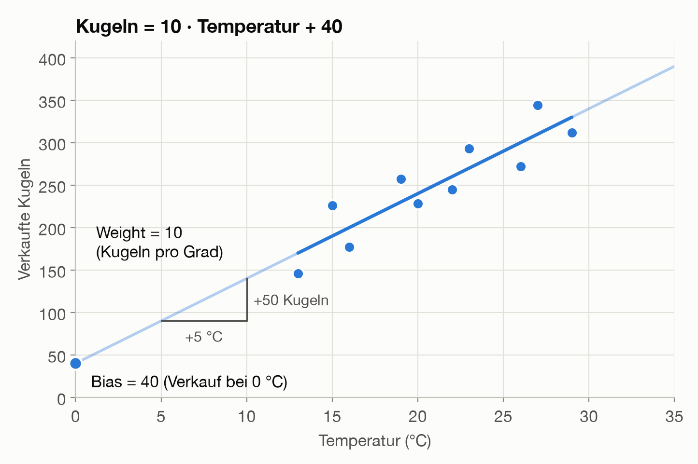
In Worten: Jedes Grad bringt 10 Kugeln mehr, und dazu kommen 40 Kugeln als Grundwert. Damit lässt sich die Frage beantworten:
Kugeln = 10 · 25 + 40 = 290
Die Gerade trifft die Messpunkte nicht genau. Im Mittel liegt sie um 24 Kugeln daneben. Diese Zahl wollen wir im Lauf des Kapitels verbessern.
Merke: Ein Modell ist eine Rechenregel, die aus einer Eingabe eine Vorhersage macht. Hier wird aus der Temperatur die Zahl der Kugeln.
3. Zwei Stellschrauben: Weight und Bias
Die Gerade hat zwei Stellschrauben: Die eine bestimmt, wie steil sie ist, die andere, wie hoch sie liegt. Bei neuronalen Netzen heißen sie Weight (Gewicht) und Bias:
| Begriff | In der Geraden | Wert | Bedeutung im Beispiel |
|---|---|---|---|
| Weight (Gewicht) | Steigung | 10 | Jedes Grad mehr bringt 10 Kugeln mehr. |
| Bias | Schnitt mit der y-Achse | 40 | Das ist der Verkauf, wenn die Temperatur 0 °C beträgt. |
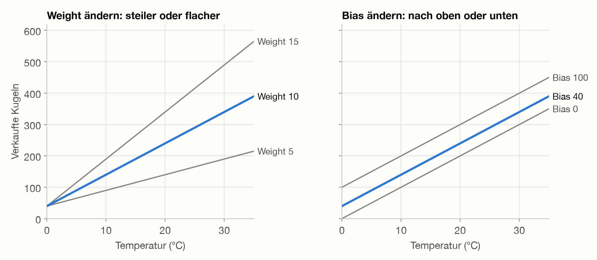
- Das Weight sagt, wie stark eine Eingabe die Vorhersage beeinflusst. Ein großes Weight bedeutet: Die Temperatur ist sehr wichtig. Ein Weight von 0 würde bedeuten: Die Temperatur spielt keine Rolle.
- Der Bias ist der Grundwert, zu dem alles andere dazukommt. Mit den „Vorurteilen“ (englisch ebenfalls Bias), von denen im Zusammenhang mit KI oft die Rede ist, hat er nichts zu tun.
Mehr als diese beiden Zahlen merkt sich das Modell nicht, die Messwerte selbst speichert es gar nicht. Weight und Bias zusammen heißen die Parameter des Modells. Große Sprachmodelle wie ChatGPT haben viele Milliarden davon (Kapitel 2).
Gemessen wurde nur zwischen 13 und 29 °C. Außerhalb dieses Bereichs rechnet die Gerade einfach weiter (in der ersten Grafik heller gezeichnet): Bei −10 °C sagt sie −60 Kugeln voraus. Ein Modell kennt nur den Bereich, aus dem seine Daten stammen. Darauf kommt Abschnitt 9 zurück.
Merke: Die Zahlen, die ein Modell beim Lernen einstellt, heißen Parameter. Unsere Gerade hat zwei: das Weight (Wie stark wirkt die Temperatur?) und den Bias (der Grundwert). Lernen heißt hier: die beiden Werte finden, die am besten zu den Daten passen.
4. Wie gut passt die Gerade? Fehler messen
Um zu entscheiden, welche Gerade am besten passt, brauchen wir eine einzige Zahl, die sagt, ob eine Gerade besser oder schlechter ist als eine andere.
Naheliegend ist, für jeden Tag auszurechnen, wie weit die Vorhersage danebenliegt:
Fehler = verkaufte Kugeln − Vorhersage
Bei 15 °C sagt die Gerade 190 Kugeln voraus, verkauft wurden 226. Der Fehler ist +36. Bei 13 °C sagt sie 170 voraus, verkauft wurden 146. Der Fehler ist −24.
Kurz überlegen: Warum kann man diese Fehler nicht einfach für alle zehn Tage zusammenzählen?
Auflösung
Weil sich Plus und Minus gegenseitig aufheben. Eine Gerade, die mal zu hoch und mal zu tief liegt, sähe dann perfekt aus.
Tatsächlich ist die Summe aller zehn Fehler für unsere Gerade genau 0, obwohl sie an keinem einzigen Tag richtig liegt. Eine waagerechte Linie bei 250 Kugeln, die die Temperatur völlig ignoriert, kommt ebenfalls auf 0. Die Summe sagt also nichts aus.
Deshalb wird jeder Fehler mit sich selbst malgenommen, also quadriert. Dann ist jeder Fehler positiv, und nichts hebt sich mehr auf. In der Grafik ist jedes orange Quadrat das Quadrat eines Fehlers, mit dem Fehler als Seitenlänge. Bei der waagerechten Linie rechts bedecken die Quadrate eine viel größere Fläche:
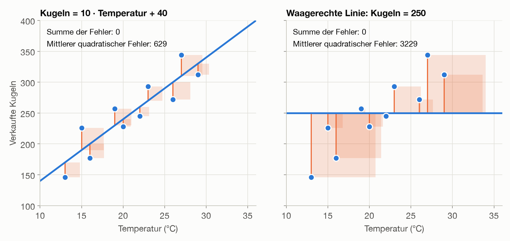
Den Durchschnitt dieser Quadrate nennt man den mittleren quadratischen Fehler. Für unsere Gerade ist er 629,2. Allgemein heißt eine solche Fehlerzahl Verlustfunktion (englisch Loss). Wenn in Berichten über KI vom „Loss“ die Rede ist, ist diese Zahl gemeint.
Außerdem zählen große Fehler beim Quadrieren stärker als kleine: Ein Fehler von 20 kostet 400 Punkte, zwei Fehler von je 10 zusammen nur 200. Das Modell vermeidet also lieber einen groben Fehlgriff als mehrere kleine.
Die Einheit des Ergebnisses ist allerdings „Kugeln zum Quadrat“ und damit schwer zu deuten. Für Menschen nennen wir deshalb weiter die mittlere Abweichung, hier 24 Kugeln. Zum Lernen nimmt das Modell den quadratischen Fehler.
Für Neugierige: Die ganze Rechnung
| Temperatur (°C) | Verkaufte Kugeln | Vorhersage | Fehler | Fehler zum Quadrat |
|---|---|---|---|---|
| 13 | 146 | 170 | −24 | 576 |
| 15 | 226 | 190 | +36 | 1296 |
| 16 | 177 | 200 | −23 | 529 |
| 19 | 257 | 230 | +27 | 729 |
| 20 | 228 | 240 | −12 | 144 |
| 22 | 245 | 260 | −15 | 225 |
| 23 | 293 | 270 | +23 | 529 |
| 26 | 272 | 300 | −28 | 784 |
| 27 | 344 | 310 | +34 | 1156 |
| 29 | 312 | 330 | −18 | 324 |
| Summe | 0 | 6292 |
Mittlerer quadratischer Fehler = 6292 / 10 = 629,2
Für das Lernen am wichtigsten ist ein dritter Grund: Die Fehlerkurve wird glatt. Sie zeigt an jeder Stelle, in welche Richtung es bergab geht (Abschnitt 5). Man könnte die Vorzeichen auch einfach weglassen, die Kurve hätte dann aber Knicke, und die Rechnung würde schwieriger. Die Kehrseite des Quadrierens: Ein einzelner Ausreißer kann die Gerade spürbar zu sich ziehen.
Mit dieser Zahl lassen sich Geraden vergleichen. Dreht man am Weight, wird der Fehler größer, egal in welche Richtung. Trägt man den Fehler für alle möglichen Weights auf, entsteht eine Kurve wie ein Tal:
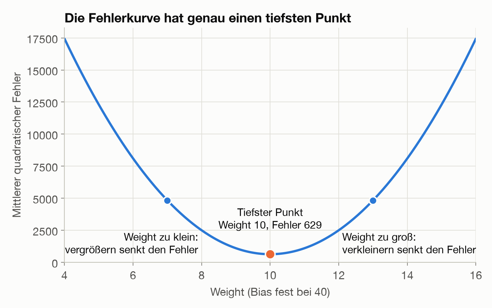
Der tiefste Punkt des Tals ist die beste Gerade. Links davon muss das Weight größer werden, rechts davon kleiner. Für Weight und Bias zusammen wird aus der Kurve eine Schüssel, und auch sie hat einen tiefsten Punkt.
Für Neugierige: Fehler für einige andere Geraden
| Weight | Bias | Mittlerer quadratischer Fehler |
|---|---|---|
| 8 | 40 | 2497,2 |
| 10 | 40 | 629,2 |
| 12 | 40 | 2497,2 |
| 10 | 20 | 1029,2 |
| 10 | 60 | 1029,2 |
Merke: Ein Modell misst seine Fehler mit einer einzigen Zahl, meist dem mittleren quadratischen Fehler. Lernen heißt: die Parameter so einstellen, dass dieser Fehler möglichst klein wird.
5. Lernen heißt: Schritt für Schritt bergab
Bisher haben wir die beste Gerade einfach angegeben. Ein Computer muss sie erst suchen.
Stell dir vor, du stehst im dichten Nebel in einem Tal und willst zum tiefsten Punkt. Du siehst das Ziel nicht, spürst aber unter den Füßen, wohin der Boden abfällt. Also gehst du ein Stück in diese Richtung und prüfst dann erneut. Nach diesem Prinzip arbeitet der Gradientenabstieg (englisch Gradient Descent):
- Mit einem beliebigen Wert starten.
- Spüren, wohin es bergab geht: die Steigung der Fehlerkurve an dieser Stelle messen.
- Ein kleines Stück in diese Richtung gehen.
- Die Schritte 2 und 3 wiederholen, bis der Fehler nicht mehr sinkt.
Starten wir mit Weight 0, nähert sich das Weight Schritt für Schritt dem besten Wert 10: erst 4,67, dann 7,16, dann 8,49 und so weiter. Die Schritte werden dabei von selbst kleiner, denn je näher man dem Talboden kommt, desto flacher wird das Gelände.
Wie groß jeder Schritt ist, legt die Lernrate fest. Sie wird vorab gewählt, und von ihr hängt ab, ob das Lernen funktioniert. Die Grafik zeigt jeweils sechs Schritte vom selben Startpunkt aus (blau):
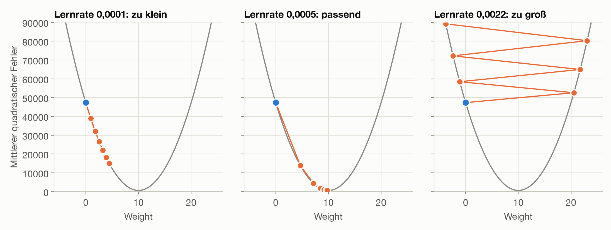
- Zu klein: Das Verfahren funktioniert, braucht aber sehr viele Schritte.
- Passend: Nach wenigen Schritten ist der Talboden fast erreicht.
- Zu groß: Jeder Schritt springt über das Tal hinweg und landet höher als der vorige. Der Fehler wächst, statt zu sinken.
Mit diesem Verfahren werden fast alle heutigen KI-Modelle trainiert, auch große Sprachmodelle. Dort werden in jedem Schritt Milliarden Parameter gleichzeitig angepasst.
Für Neugierige: Wie man die Steigung ausrechnet
Zum Ausprobieren lernen wir nur das Weight und lassen den Bias bei 40. Mit Weight 0 ist der Fehler 47329,2. Erhöhen wir das Weight probeweise auf 0,01, sinkt der Fehler auf 47235,8. Das sind 93,4 weniger auf nur 0,01 Weight, also eine Steigung von rund −9340. Das Minus sagt: Nach rechts geht es bergab, das Weight muss größer werden.
Das Ausprobieren kann man sich sparen. Die Mathematik (die Ableitung des quadratischen Fehlers) liefert die Steigung direkt:
Steigung für das Weight = −2 · Durchschnitt(Fehler · Input)
Steigung für den Bias = −2 · Durchschnitt(Fehler)
Alle Steigungen zusammen heißen Gradient, daher der Name des Verfahrens. Anschaulich: Liegen die Vorhersagen zu niedrig, sind die Fehler positiv, die Steigung wird negativ, und das Weight wächst.
Der Schritt bergab lautet:
neues Weight = altes Weight − Lernrate · Steigung
Das Minus sorgt dafür, dass wir gegen die Steigung gehen, also bergab. Mit einer Lernrate von 0,0005 ist der erste Schritt 0 − 0,0005 · (−9340) = 4,67. So geht es weiter:
| Schritt | Weight | Steigung | Änderung | Mittlerer quadratischer Fehler |
|---|---|---|---|---|
| 0 | 0,00 | −9340,0 | +4,67 | 47329,2 |
| 1 | 4,67 | −4978,2 | +2,49 | 13896,2 |
| 2 | 7,16 | −2653,4 | +1,33 | 4398,2 |
| 3 | 8,49 | −1414,3 | +0,71 | 1699,9 |
| 4 | 9,19 | −753,8 | +0,38 | 933,4 |
| 5 | 9,57 | −401,8 | +0,20 | 715,6 |
| 6 | 9,77 | −214,1 | +0,11 | 653,7 |
| 7 | 9,88 | −114,1 | +0,06 | 636,2 |
| 8 | 9,93 | −60,8 | +0,03 | 631,2 |
Ganz auf 0 fällt der Fehler nicht: Unter 629,2 kommt keine Gerade, weil die Punkte nicht exakt auf einer Geraden liegen.
Für Neugierige: Weight und Bias gleichzeitig lernen
In Wirklichkeit lernt das Modell alle Werte gleichzeitig. Jeder bekommt in jedem Schritt seine eigene Steigung. Als Programm in Python:
for schritt in range(100_000):
fehler = kugeln - (weight * temperatur + bias)
weight += lernrate * 2 * np.mean(fehler * temperatur)
bias += lernrate * 2 * np.mean(fehler)
Mit Start bei Weight 0 und Bias 0 und einer Lernrate von 0,001 ergibt sich:
| Schritte | Weight | Bias | Mittlerer quadratischer Fehler |
|---|---|---|---|
| 0 | 0,00 | 0,00 | 65729,2 |
| 1 | 11,02 | 0,50 | 983,1 |
| 10 | 11,77 | 0,57 | 715,7 |
| 100 | 11,76 | 0,97 | 714,0 |
| 1000 | 11,59 | 4,68 | 698,7 |
| 10000 | 10,58 | 27,01 | 638,6 |
| 50000 | 10,01 | 39,85 | 629,2 |
| 100000 | 10,00 | 40,00 | 629,2 |
Das Modell findet die Gerade aus Abschnitt 2 also von selbst. Auffällig ist: Das Weight schießt zunächst über 10 hinaus, weil es den fehlenden Bias ausgleicht. Danach wächst der Bias nur langsam, denn in der Steigung zählt jeder Fehler beim Weight mit dem Faktor Temperatur (bis 29), beim Bias aber nur einfach. In der Praxis rechnet man die Inputs deshalb vorher auf eine ähnliche Größenordnung um (Skalieren). In unserem Beispiel reichen dann 36 statt rund 40800 Schritte.
Für eine einzelne Gerade gibt es sogar eine fertige Formel, die das Ergebnis direkt ausrechnet. Der Gradientenabstieg ist hier also ein Umweg. Er ist aber der Weg, der auch bei neuronalen Netzen mit Millionen von Weights funktioniert, wo es keine solche Formel gibt.
Merke: Der Gradientenabstieg findet die besten Parameter in kleinen Schritten: Steigung messen, ein Stück bergab gehen, wiederholen. Die Lernrate bestimmt die Schrittlänge. Ist sie zu groß, klappt das Lernen nicht.
6. Eine zweite Beobachtung: das Wochenende
Warum liegt die Gerade an manchen Tagen so weit daneben? Der Eisverkäufer schaut in seine Notizen: Die Ausreißer nach oben waren Wochenenden. Also notiert er eine zweite Beobachtung. Der Computer rechnet nur mit Zahlen, deshalb wird daraus: 1 = Wochenende, 0 = Werktag.
Kurz überlegen: Warum nummeriert man die Wochentage nicht einfach durch, Montag = 1 bis Sonntag = 7?
Auflösung
Weil das Modell mit den Zahlen rechnet, als wären es Mengen. Für das Modell wäre der Sonntag dann „siebenmal so viel“ wie der Montag, und der Samstag läge näher am Freitag als am Sonntag. Die Nummern würden eine Ordnung behaupten, die es nicht gibt. Wie Beobachtungen in Zahlen übersetzt werden, entscheidet ein Mensch, und davon hängt ab, was das Modell lernen kann.
| Temperatur (°C) | Wochenende | Verkaufte Kugeln |
|---|---|---|
| 13 | 0 | 146 |
| 15 | 1 | 226 |
| 16 | 0 | 177 |
| 19 | 1 | 257 |
| 20 | 0 | 228 |
| 22 | 0 | 245 |
| 23 | 1 | 293 |
| 26 | 0 | 272 |
| 27 | 1 | 344 |
| 29 | 0 | 312 |
Die Formel bekommt dafür ein zweites Weight:
Kugeln = 10 · Temperatur + 50 · Wochenende + 20
Für einen Tag mit 25 °C heißt das:
Werktag: 10 · 25 + 50 · 0 + 20 = 270
Samstag: 10 · 25 + 50 · 1 + 20 = 320
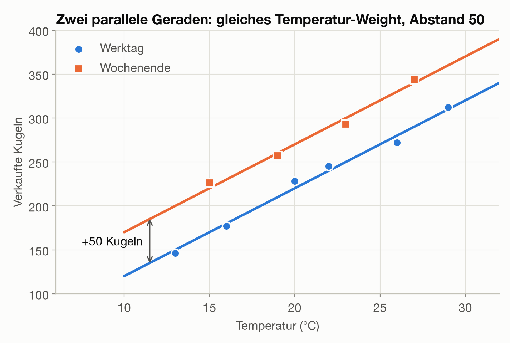
Die eine Gerade hat sich in zwei parallele Geraden aufgeteilt, und die Vorhersage wird deutlich besser:
| Modell | Formel | Im Mittel daneben |
|---|---|---|
| Nur Temperatur | 10 · Temperatur + 40 |
24 Kugeln |
| Temperatur + Wochenende | 10 · Temperatur + 50 · Wochenende + 20 |
5 Kugeln |
Damit kann der Eisverkäufer seine Frage aus Abschnitt 1 genauer beantworten: Bei 25 °C sollte er an einem Werktag 270 Kugeln einplanen, an einem Samstag 320.
Für Neugierige: Warum der Bias von 40 auf 20 gesunken ist
Vier der zehn Tage waren Wochenenden. Im alten Bias steckten deshalb durchschnittlich 0,4 · 50 = 20 Kugeln Wochenend-Effekt. Jetzt hat dieser Effekt ein eigenes Weight. Aus demselben Grund waren die 290 Kugeln aus Abschnitt 2 nur ein Mittelwert: 0,6 · 270 + 0,4 · 320 = 290.
Das Temperatur-Weight bleibt nur deshalb bei 10, weil die Wochenenden in unseren Daten im Schnitt genauso warm waren wie die Werktage. Bei echten Daten verschieben sich meist alle Werte. Der mittlere quadratische Fehler sinkt von 629,2 auf 29,2.
An diesem Beispiel lassen sich die zwei Phasen unterscheiden, die jedes Modell durchläuft. Im Training werden die Weights aus den Daten bestimmt, hier 10, 50 und 20. In der Anwendung (Fachwort: Inferenz) bleiben sie fest, und das Modell rechnet nur noch Vorhersagen aus, etwa 320 Kugeln für einen Samstag mit 25 °C. Ein Chat-Assistent ist während eines Gesprächs immer in der Anwendung (Kapitel 2).
Merke: Jede zusätzliche Beobachtung bekommt ein eigenes Weight. Beim Training ändern sich die Parameter, bei der Anwendung bleiben sie fest.
7. Die Prüfung: Funktioniert es auch an neuen Tagen?
Bisher haben wir den Fehler nur an den Tagen gemessen, mit denen das Modell gelernt hat. Der Eisverkäufer will aber wissen, was morgen passiert. Das ist wie eine Prüfung, in der nur Aufgaben vorkommen, deren Lösungen man vorher schon gesehen hat. Sie sagt wenig darüber, ob man den Stoff verstanden hat.
Deshalb prüfen wir das Modell an Tagen, die es beim Lernen nicht kannte. Zum Vergleich geben wir ihm außerdem Zufallszahlen als zusätzliche, völlig sinnlose Eingaben.
Kurz überlegen: Was vermutest du: Wird ein Modell besser, wenn man ihm zusätzliche Eingaben gibt, auch wenn diese reiner Zufall sind? Die Tabelle zeigt das Ergebnis.
| Modell | Fehler auf den Trainingstagen | Fehler auf neuen Tagen |
|---|---|---|
| Nur Temperatur | 629 | 1043 |
| Temperatur + Wochenende | 29 | 57 |
| Temperatur + Wochenende + 1 Zufallszahl | 27 | 72 |
| Temperatur + Wochenende + 3 Zufallszahlen | 16 | 127 |
| Temperatur + Wochenende + 6 Zufallszahlen | 2 | 2980 |
Angegeben ist jeweils der mittlere quadratische Fehler. Daraus lässt sich ablesen:
- Auf neuen Tagen ist der Fehler immer größer als auf den Trainingstagen. Nur diese zweite Zahl sagt etwas über morgen.
- Das Wochenende verbessert die Vorhersage auch auf neuen Tagen deutlich.
- Sinnlose Eingaben senken den Trainingsfehler ebenfalls, auf neuen Tagen wird das Modell aber immer schlechter. Mit 6 Zufallszahlen sieht es im Training fast perfekt aus und liegt auf neuen Tagen weit daneben.
Das nennt man Überanpassung (englisch Overfitting): Das Modell lernt die zufälligen Schwankungen der Trainingstage auswendig, statt den Zusammenhang zu erkennen, ähnlich wie jemand, der alte Klausuren auswendig lernt und bei einer neuen Aufgabe nicht weiterkommt.
Für Neugierige: Wie genau geprüft wurde
Mit nur zehn Tagen lassen wir jeden Tag einmal weg, lernen mit den übrigen neun und sagen den ausgelassenen Tag vorher. Bei den Zufallszahlen ist der Median aus 200 Durchläufen angegeben. Im Extremfall hat ein Modell 10 Parameter für 10 Tage und damit einen Trainingsfehler von genau 0. Üblicherweise legt man vor dem Training einen Teil der Daten als Testdaten beiseite und rührt ihn erst ganz am Ende an.
Merke: Ein Modell wird immer an Daten geprüft, die es beim Training nicht gesehen hat. Sonst bleibt Überanpassung unentdeckt. Mehr Eingaben oder Parameter sind nicht automatisch besser.
8. Vom Modell zum Neuron
Zeichnet man dieselbe Formel als Diagramm, erhält man die Grundform eines künstlichen Neurons:
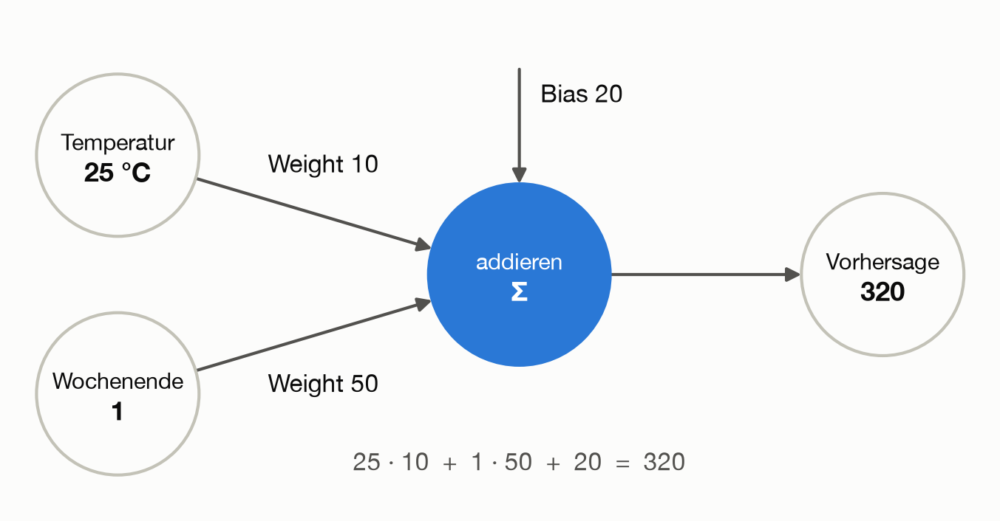
Der Name stammt von den Nervenzellen im Gehirn: Sie empfangen Signale von anderen Zellen, verstärken manche davon und feuern selbst, wenn genug zusammenkommt. Das ist allerdings nur ein grobes Vorbild. Ein künstliches Neuron ist eine einfache Rechenformel.
Unser Neuron macht bisher drei Dinge:
- Es nimmt Inputs (Eingaben) entgegen, hier Temperatur und Wochenende.
- Es multipliziert jeden Input mit seinem Weight.
- Es addiert alles und zählt den Bias dazu. Das Ergebnis ist die Vorhersage.
| Lineare Regression | Neuron |
|---|---|
| Beobachtungen | Inputs |
| Steigungen | Weights |
| Schnitt mit der y-Achse | Bias |
| Ergebnis der Formel | Vorhersage |
Auch das Training ist dasselbe: Mit dem Gradientenabstieg aus Abschnitt 5 findet das Neuron die Werte 10, 50 und 20 von selbst.
Kurz überlegen: Was sagt das Neuron für einen Sonntag mit 18 °C voraus?
Auflösung
18 · 10 + 1 · 50 + 20 = 250 Kugeln.
Für Neugierige: Das Neuron als Programm
Als Python-Programm ist ein Neuron nur eine Zeile:
def neuron(inputs, weights, bias):
return sum(x * w for x, w in zip(inputs, weights)) + bias
neuron([25, 1], [10, 50], 20) # 320
Gelernt hat das Neuron die Werte 10, 50 und 20 von Weights und Bias 0 aus, in 100000 Schritten mit einer Lernrate von 0,001.
Bis hierher kann unser Neuron nur Geraden (bei zwei Inputs genau genommen eine Ebene). Was noch fehlt, ist die Aktivierungsfunktion.
Merke: Ein künstliches Neuron ist eine einfache Rechnung: jeden Input mit seinem Weight malnehmen, alles addieren, den Bias dazuzählen.
9. Der Knick: die Aktivierungsfunktion
In Abschnitt 3 sagte die Gerade für −10 °C eine negative Zahl voraus. Das Neuron hat dasselbe Problem: Für einen Werktag mit −10 °C rechnet es 10 · (−10) + 50 · 0 + 20 = −80 Kugeln aus. Weniger als 0 Kugeln kann aber niemand verkaufen.
Deshalb wendet das Neuron am Ende eine einfache Regel auf sein Ergebnis an: Ist das Ergebnis negativ, gib 0 aus, sonst das Ergebnis selbst. Diese Regel heißt Aktivierungsfunktion, und die hier gezeigte ist die gebräuchlichste (Fachname: ReLU). Dadurch bekommt jede der beiden Geraden einen Knick:
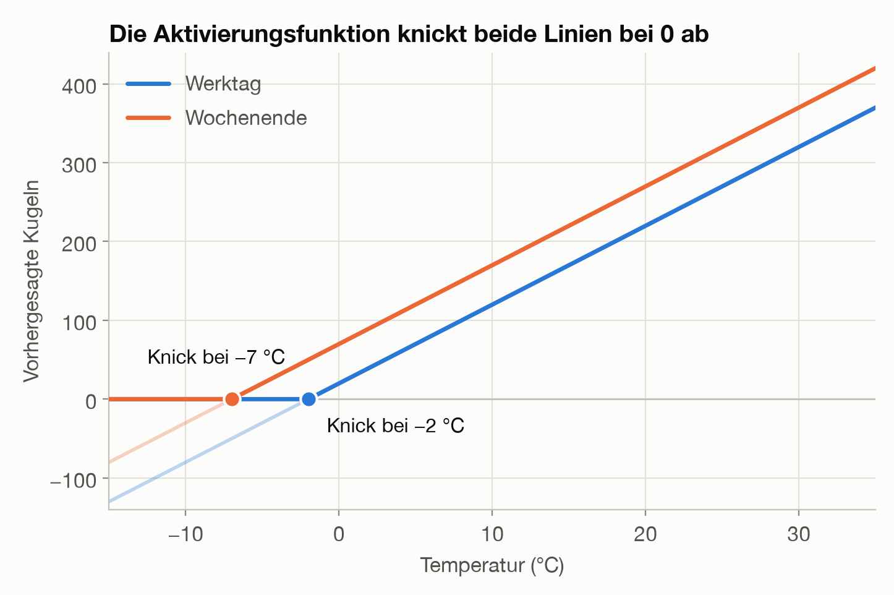
Daher der Name: Liegt die Summe unter 0, bleibt das Neuron stumm, darüber ist es aktiv. Im Neuron kommt damit ein vierter Schritt hinzu:
- Es nimmt Inputs entgegen.
- Es multipliziert jeden Input mit seinem Weight.
- Es addiert alles und zählt den Bias dazu.
- Es gibt die Summe durch die Aktivierungsfunktion. Das Ergebnis ist die Vorhersage.
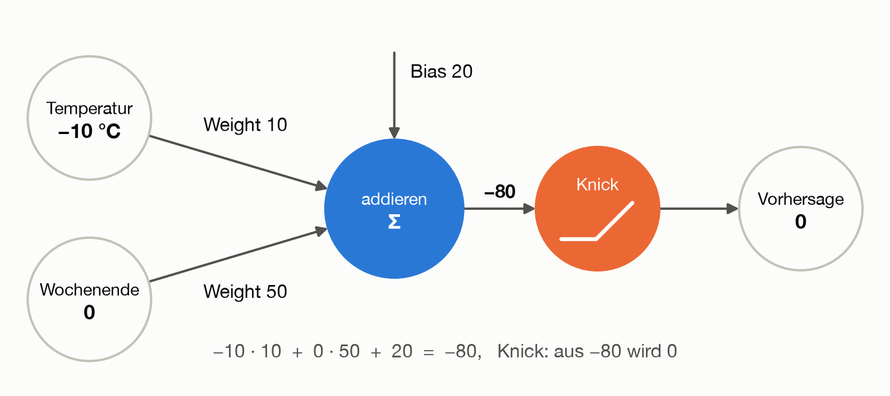
Für unsere zehn Beobachtungstage ändert sich an den besten Werten nichts, weil dort alle Vorhersagen positiv sind.
Für Neugierige: Der Knick als Programm und das „tote Neuron“
def aktivierung(wert):
return max(0, wert)
def neuron_mit_knick(inputs, weights, bias):
return aktivierung(neuron(inputs, weights, bias))
neuron_mit_knick([-10, 0], [10, 50], 20) # 0, statt −80
neuron_mit_knick([25, 1], [10, 50], 20) # 320, wie bisher
Für das Training hat der Knick eine Folge: Im abgeschnittenen Bereich bleibt die Ausgabe 0, egal wie man die Weights ein wenig verändert. Die Steigung ist dort also 0, und das Neuron lernt an solchen Tagen nichts. Sind alle Tage betroffen, bleibt es für immer stehen:
| Start (Weights, Bias) | Ergebnis nach 100000 Schritten | Mittlerer quadratischer Fehler |
|---|---|---|
| 0, 0, 0 | bleibt bei 0, 0, 0 | 65729,2 |
| −1, 0, 0 | bleibt bei −1, 0, 0 | 65729,2 |
| 1, 1, 1 | findet 10, 50, 20 | 29,2 |
Das nennt man ein totes Neuron. Der Startwert 0 aus Abschnitt 5 wäre hier also keine gute Wahl. Abschnitt 10 zeigt, wie man damit umgeht.
Neben ReLU gibt es weitere Aktivierungsfunktionen, etwa die S-förmige Sigmoid-Funktion, die Werte sanft zwischen 0 und 1 begrenzt. Die Aufgabe ist immer dieselbe: Sie bringt einen Knick oder eine Biegung ins Neuron.
Mehrere Neuronen mit Knick
Wichtiger als das Vermeiden negativer Kugeln ist, was der Knick ermöglicht, wenn mehrere Neuronen zusammenarbeiten.
Der Sommer geht weiter, und der Eisverkäufer notiert acht weitere Tage zwischen 31 und 38 °C. Bei rund 350 Kugeln ist Schluss, mehr schafft er an einem Tag nicht. Unser Neuron merkt davon nichts: Es sagt weiter steigende Verkäufe voraus und liegt im Hochsommer im Mittel um 45 Kugeln daneben, am heißesten Tag (38 °C, Wochenende) sogar um 101.
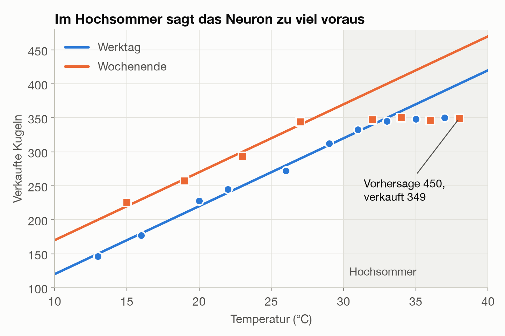
Neues Training hilft nicht: Lernt das Neuron mit allen 18 Tagen, passen die Hochsommertage etwas besser, dafür die anderen schlechter. Eine Gerade kann nicht erst steigen und dann waagerecht weiterlaufen.
Versuchen wir es mit zwei Neuronen, deren Ergebnisse wir voneinander abziehen. Neuron A ist unser bekanntes Neuron. Neuron B ist genauso gebaut, nur sein Bias ist viel niedriger (−330 statt 20). Es bleibt deshalb stumm, bis A die 350 erreicht, und zieht danach ab, was A noch dazugewinnt.
- Ohne Knick fallen Temperatur und Wochenende beim Abziehen heraus: Das Ergebnis ist immer 350, egal wie warm es ist. Zwei Geraden ergeben zusammen wieder nur eine Gerade.
- Mit Knick entsteht die gesuchte Form: Erst steigt die Kurve, dann bleibt sie bei 350 stehen.
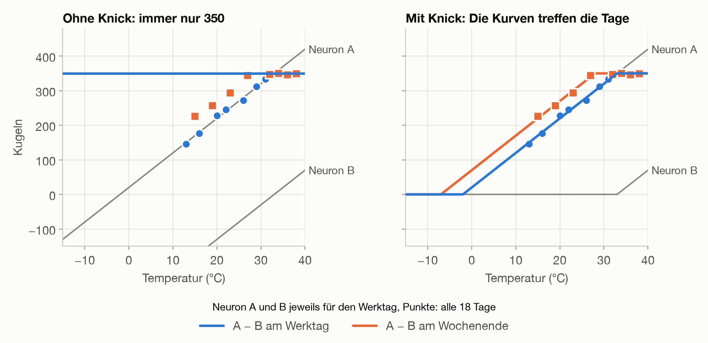
Am Wochenende ist das Limit schon bei 28 °C erreicht, am Werktag erst bei 33 °C. Auf allen 18 Tagen zeigt sich der Unterschied deutlich:
| Modell | Im Mittel daneben | Davon an Hochsommertagen |
|---|---|---|
| Ein Neuron, mit 10 Tagen gelernt | 22,7 Kugeln | 44,8 Kugeln |
| Ein Neuron, mit allen 18 Tagen neu gelernt | 15,4 Kugeln | 16,5 Kugeln |
| Zwei Neuronen mit Knick, von Hand gesetzt | 3,8 Kugeln | 2,2 Kugeln |
Für Neugierige: Die Rechnung mit und ohne Knick
Neuron A = 10 · Temperatur + 50 · Wochenende + 20
Neuron B = 10 · Temperatur + 50 · Wochenende − 330
Ergebnis = A − B
| Tag | Temperatur (°C) | Ohne Knick: A | Ohne Knick: B | Ohne Knick: A − B | Mit Knick: A | Mit Knick: B | Mit Knick: A − B |
|---|---|---|---|---|---|---|---|
| Werktag | −10 | −80 | −430 | 350 | 0 | 0 | 0 |
| Werktag | 20 | 220 | −130 | 350 | 220 | 0 | 220 |
| Werktag | 33 | 350 | 0 | 350 | 350 | 0 | 350 |
| Werktag | 35 | 370 | 20 | 350 | 370 | 20 | 350 |
| Samstag | 28 | 350 | 0 | 350 | 350 | 0 | 350 |
| Samstag | 35 | 420 | 70 | 350 | 420 | 70 | 350 |
Die acht Hochsommertage mit den Vorhersagen des ersten Neurons:
| Temperatur (°C) | Wochenende | Verkaufte Kugeln | Vorhersage | Fehler |
|---|---|---|---|---|
| 31 | 0 | 333 | 330 | +3 |
| 32 | 1 | 347 | 390 | −43 |
| 33 | 0 | 345 | 350 | −5 |
| 34 | 1 | 350 | 410 | −60 |
| 35 | 0 | 348 | 370 | −22 |
| 36 | 1 | 346 | 430 | −84 |
| 37 | 0 | 350 | 390 | −40 |
| 38 | 1 | 349 | 450 | −101 |
Mit allen 18 Tagen neu gelernt, ergibt sich etwa 7,4 · Temperatur + 25,1 · Wochenende + 81,9. Die mittleren quadratischen Fehler der drei Modelle in der Tabelle oben sind 1395,3, 382,8 und 19,8.
Jedes Neuron bringt seinen eigenen Knick an einer anderen Stelle mit. Mit genügend Knicken lässt sich fast jede Kurve annähern, so wie man einen Kreis aus vielen kurzen Geraden zeichnen kann.
Merke: Die Aktivierungsfunktion ist der Knick im Neuron. Erst er macht aus vielen Neuronen mehr als eine einzige Gerade.
10. Vom Neuron zum Netz
Eigentlich haben wir in Abschnitt 9 schon ein neuronales Netz gebaut. Das Abziehen ist nämlich selbst ein Neuron: Es bekommt die Ergebnisse von A und B als Inputs, mit den Weights +1 und −1 und dem Bias 0. Zusammen sind das drei Neuronen in zwei Schichten.
Die Abbildung zeigt die Rechnung für einen Samstag mit 35 °C. Man liest sie von links nach rechts:
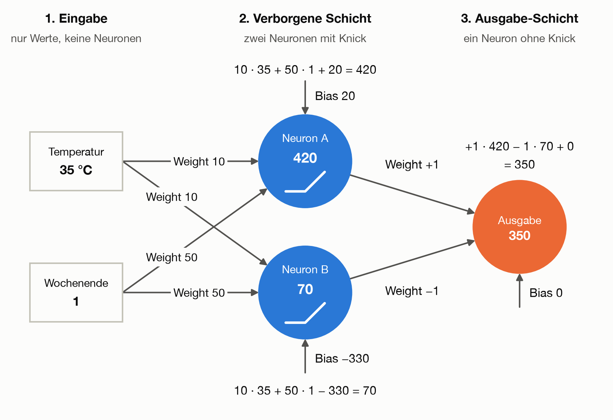
- Eingabe: Temperatur und Wochenende gehen beide an jedes der zwei Neuronen, deshalb die vier Pfeile.
- Verborgene Schicht: Jedes Neuron rechnet für sich: jeden Input mal sein Weight, alles addieren, seinen eigenen Bias dazu, danach kommt der Knick (das kleine Symbol im Kreis).
- Ausgabe: Sie nimmt 420 von A und zieht wegen des Weights −1 die 70 von B ab. Übrig bleiben 350.
Wie das Limit von 350 entsteht, sieht man im Vergleich mehrerer Tage:
| Tag | Temperatur (°C) | Neuron A | Neuron B | Ausgabe | Was passiert |
|---|---|---|---|---|---|
| Werktag | −10 | −80, Knick macht 0 | −430, Knick macht 0 | 0 | Beide Neuronen sind stumm. |
| Werktag | 20 | 220 | −130, Knick macht 0 | 220 | Nur A arbeitet, die Linie steigt. |
| Samstag | 35 | 420 | 70 | 350 | B zieht den Überschuss wieder ab. |
Ein neuronales Netz besteht also aus vielen Neuronen, bei denen die Ergebnisse der einen Schicht die Inputs der nächsten sind:
- Die Eingabe nimmt die Daten entgegen.
- Die verborgenen Schichten liegen dazwischen. Hier sitzen die Knicke. Von Deep Learning spricht man, wenn es viele solcher Schichten sind.
- Die Ausgabe liefert die Vorhersage.
Jedes Neuron hat ein Weight pro Input und einen eigenen Bias, hier also je drei. Unser Netz hat damit 3 + 3 + 3 = 9 Parameter.
Wie lernt ein Netz?
Einen Fehler gibt es nur am Ende des Netzes. Die Neuronen in der Mitte haben keinen eigenen Zielwert, trotzdem müssen auch ihre Weights angepasst werden.
Dafür gibt es Backpropagation (Rückwärtsverteilung des Fehlers). Man kann es sich vorstellen wie die Nachbesprechung in einem Team: Vom Ergebnis aus fragt man rückwärts, wer wie viel dazu beigetragen hat, und jeder justiert seinen Teil ein wenig nach. Ist die Ausgabe zu hoch, erfährt Neuron A, dass es etwas weniger liefern soll, und das abgezogene Neuron B, dass es etwas mehr liefern soll. Danach läuft alles wie gehabt: Gradientenabstieg, Schritt für Schritt bergab.
Netze starten mit Zufallswerten. Bei 0 wären die Neuronen von Anfang an stumm. Und würden alle Neuronen gleich starten, blieben sie für immer Kopien voneinander. Durch den Zufall entwickelt sich jedes Neuron anders. Wir haben unser Mini-Netz 20-mal mit verschiedenen Zufallswerten aus den 18 Tagen lernen lassen: 4 Starts fanden eine Lösung, die so gut ist wie die von Hand gesetzten Werte oder besser. Die übrigen 16 blieben bei schlechteren Lösungen hängen, 4 davon mit toten Neuronen. Große Netze kommen damit deutlich besser zurecht, weil sie viel mehr Neuronen haben, als sie streng genommen bräuchten.
Auch für das Netz gilt die Regel aus Abschnitt 7. Wir haben 6 der 18 Tage beiseitegelegt, mit den übrigen 12 gelernt und dann an den 6 unbekannten geprüft:
| Modell | Fehler auf den Trainingstagen | Fehler auf neuen Tagen |
|---|---|---|
| Einzelnes Neuron | 277 | 605 |
| Netz mit Knick | 12 | 74 |
Das Netz ist also auch an Tagen besser, die es nie gesehen hat. Es hat den Zusammenhang gelernt, nicht nur die einzelnen Tage.
Für Neugierige: Backpropagation mit Zahlen
Für ein inneres Weight bekommt die Formel aus Abschnitt 5 nur einen zusätzlichen Faktor, nämlich das Weight auf dem Weg zur Ausgabe (hier für einen einzelnen Tag):
Steigung für ein inneres Weight = −2 · Fehler · Ausgabe-Weight · Input
Ein Beispiel: An einem Samstag mit 35 °C wäre 350 richtig, das Temperatur-Weight von Neuron B steht aber fälschlich auf 9 statt 10. Dann ist A = 420, B = 35, die Ausgabe 385 und der Fehler −35. Für die beiden Temperatur-Weights (Input 35) folgt daraus:
Steigung für das Weight von A = −2 · (−35) · (+1) · 35 = +2450, das Weight wird kleiner
Steigung für das Weight von B = −2 · (−35) · (−1) · 35 = −2450, das Weight wird größer
Das Vorzeichen des Ausgabe-Weights sorgt dafür, dass jedes Neuron die richtige Richtung erfährt. Bei einem abgeschnittenen Neuron ist die Steigung 0, und bei mehr Schichten kommt je Schicht ein weiterer Faktor hinzu (die Kettenregel aus der Mathematik).
Für Neugierige: Die Ergebnisse der 20 Zufallsstarts
Jeder Start lief 30000 Schritte, Inputs und Verkaufszahlen waren dafür auf eine ähnliche Größenordnung umgerechnet.
| Ergebnis nach dem Training | Starts | Mittlerer quadratischer Fehler |
|---|---|---|
| So gut wie von Hand oder besser | 4 | 18 bis 19 |
| Zwischenlösung | 5 | 56 bis 197 |
| Kaum besser als ein einzelnes Neuron oder schlechter | 7 | 378 bis 1096 |
| Tote Neuronen, nur eine waagerechte Linie | 4 | 4082 |
Zum Vergleich: Die von Hand gesetzten Werte kommen auf 19,8, ein einzelnes Neuron auf 382,8. Anders als bei der Geraden gibt es hier nicht mehr nur ein Tal, und welches das Netz erreicht, hängt vom Start ab.
Für den Test wurden die Tage nach Temperatur sortiert und jeder dritte beiseitegelegt, damit auch Hochsommertage dabei sind. Vom Netz wurde der beste von 20 Starts genommen, ausgewählt nur nach dem Trainingsfehler. Mit nur 6 Testtagen ist das eine grobe Prüfung, bei echten Daten nimmt man deutlich mehr.
Merke: Ein neuronales Netz besteht aus Schichten von Neuronen. Es lernt wie die Gerade: Fehler messen, bergab gehen, wiederholen. Backpropagation sorgt dafür, dass auch die Neuronen in der Mitte erfahren, in welche Richtung sie sich ändern sollen.
Das Wichtigste in Kürze
- Ein Modell ist eine Rechenregel, die aus Eingaben eine Vorhersage macht. Seine Stellschrauben heißen Parameter: Weights (wie stark wirkt eine Eingabe?) und Bias (der Grundwert).
- Lernen heißt, die Parameter so einzustellen, dass der Fehler möglichst klein wird. Gemessen wird er meist als mittlerer quadratischer Fehler.
- Der Gradientenabstieg findet die besten Parameter Schritt für Schritt bergab. Die Lernrate bestimmt die Schrittlänge.
- Beim Training ändern sich die Parameter, bei der Anwendung bleiben sie fest.
- Ein Modell wird an Daten geprüft, die es nicht kennt. Sonst bleibt Überanpassung, also Auswendiglernen, unentdeckt.
- Ein Neuron gewichtet seine Inputs, addiert sie, zählt den Bias dazu und gibt das Ergebnis durch die Aktivierungsfunktion, den Knick.
- Ohne Knick ergeben auch viele Neuronen zusammen nur eine Gerade. Mit Knick kann ein neuronales Netz fast jede Kurve lernen.
- Backpropagation reicht den Fehler von hinten nach vorne durch, damit auch die Neuronen in der Mitte lernen.
Teste dich
Was genau „lernt“ ein Modell eigentlich?
Seine Parameter, also Weights und Bias. Die Beispieldaten selbst speichert es nicht. Alles, was das Modell nach dem Training kann, steckt in diesen Zahlen.
Warum quadriert man die Fehler, bevor man sie zusammenzählt?
Damit sich Fehler nach oben und nach unten nicht gegenseitig aufheben. Außerdem zählen große Fehler dadurch besonders stark.
Was passiert, wenn die Lernrate zu groß gewählt ist?
Jeder Schritt springt über das Tal hinweg und landet höher als der vorige. Der Fehler wächst, statt zu sinken, und das Modell lernt nichts.
Ein Modell hat auf seinen Trainingsdaten fast keinen Fehler. Warum reicht das nicht als Nachweis, dass es gut ist?
Es könnte die Trainingsdaten auswendig gelernt haben (Überanpassung). Ob es den Zusammenhang erkannt hat, zeigt erst ein Test mit Daten, die es beim Training nicht gesehen hat.
Wozu braucht ein Neuron den Knick?
Ohne Knick ergeben beliebig viele Neuronen zusammen wieder nur eine Gerade. Erst der Knick erlaubt Kurven, etwa einen Verkauf, der erst steigt und dann bei 350 Kugeln stehen bleibt.
Wie es weitergeht
Neuronale Netze stecken zum Beispiel in der Spracherkennung von Smartphones, in Übersetzungsprogrammen und in Spamfiltern. Sie sind viel größer als unser Mini-Netz, werden aber ebenfalls mit Fehler, Gradient und Lernrate trainiert.
Am bekanntesten sind große Sprachmodelle wie ChatGPT. Sie haben viele Milliarden Parameter, und ihre Eingabe ist Text. Wie Text zu Zahlen wird und wie daraus ein Sprachmodell entsteht, zeigt Kapitel 2.
Selbst ausprobieren
In Labor 1 lässt sich alles aus diesem Kapitel mit Reglern ausprobieren: die Gerade verschieben, Schritt für Schritt bergab gehen, das Neuron mit Knick einstellen und das kleine Netz von Hand setzen oder selbst lernen lassen. Das Labor läuft direkt im Browser, auch ohne Internetverbindung.
Für technisch Interessierte: Alles selbst nachrechnen
Ein Python-Skript rechnet das gesamte Beispiel nach und erzeugt alle Grafiken neu. Der Lauf dauert etwa eine halbe Minute. Dafür wird uv benötigt:
uv run docs/beispiele/01_eisverkaeufer.py
Die Daten stehen am Anfang von beispiele/01_eisverkaeufer.py und können dort geändert werden. Die Weights und der Bias werden dann neu berechnet. Fest eingetragen sind die Beispielrechnung im Neuron-Bild, die von Hand gesetzten Werte der Neuronen A und B, die Lernraten sowie einige Titel, Beschriftungen und Achsenbereiche der Grafiken. Sie müssen dann eventuell mit angepasst werden.
Die ganze Webseite des Workshops lässt sich auch lokal starten, etwa mit python3 -m http.server --directory docs.